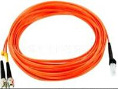

MTRJ FIBER PATCH CORD

Item |
Single mode |
Multi mode |
Fiber diameter |
9/125um |
62.5/125um 50/125um |
Insertion loss |
PC＜0.3dB |
PC＜0.7dB |
Return loss |
PC＞40dB |
PC＞25dB |
Insert–pull test |
(1000times) ＜0.3dB |
|
Operation temperature |
-40℃ ~ +80℃ |
|
Anti-tensile force |
15kgf |
|